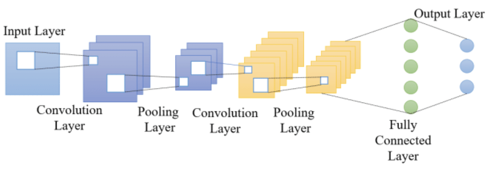
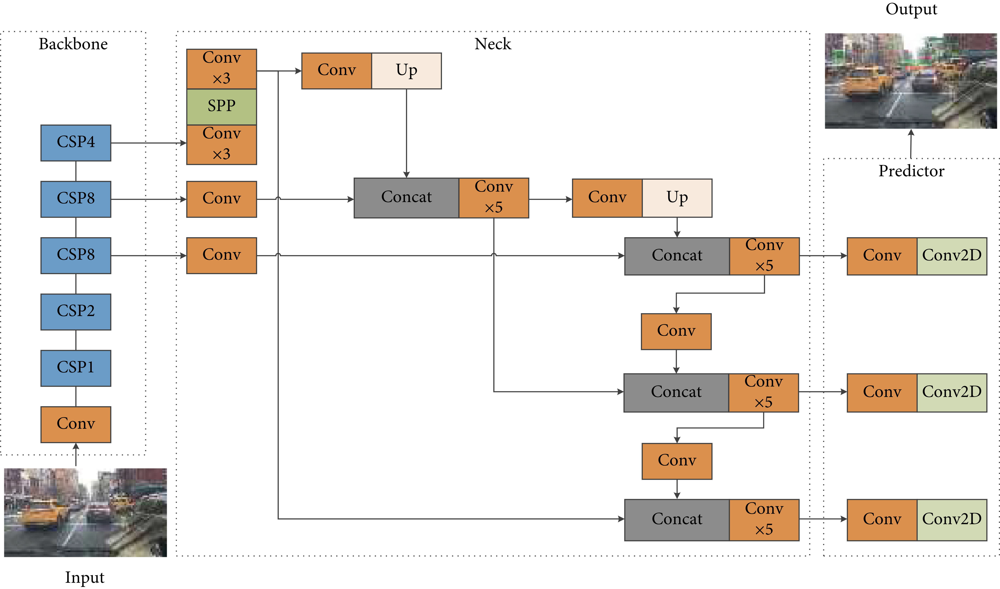

Computer Vision Project
Xinrui Li, Asude Baykal, Kavin Chaisawangwong
As self-driving vehicles or automotive driver assistance have become more widespread in real life, it is important to develop intelligent vehicle detection systems that will improve road safety and driving performance. However, vehicle detection systems encounter many challenges due to the number of vehicles in a traffic, different sized vehicles, and other environmental factors such as air clarity, weather conditions. Therefore, it is important to implement an automated vehicle detection system that can accurately locate a vehicle, and predict its coordinates. This paper implements and compares three methods of car detection using supervised learning with 2D images and their annotations.
Vehicle detection systems using computer vision has been popular during the recent years. These systems can be used for road assistance for drivers and self-driving vehicles. According to vehicle accident statistics, one of the main threats is the other cars on the road [Zeehang]. It is important to develop vehicle detection systems to mitigate the road dangers through automotive vehicle assistance, but also improve the performance of self-driving vehicles. Unfortunately, understanding the traffic scene as accurately and fast as possible is a hard task due to the complex traffic conditions and air clarity. In this paper, we will be analyzing computer vision-based vehicle detection algorithms that use 2D images from the view of the camera mounted on the vehicle.
This project will provide a comparison of the results yielded by applying a
traditional and two different deep learning methods to detecting vehicles in
a static image. The methodology of each model will be categorically detailed along
with the results produced by their respective application.
We used the self driving car dataset from roboflow [3] which contains over 30000 images, and we split them into 80% training set, 10% validation set, 10% test set. However, we found that the given true results for bounding boxes are not always correct. The results sometimes assign several different boxes to one car object which will lower our accuracy. So, before calculating the accuracy, we pre-process the results by deleting the boxes whose coordinate value is less than a certain threshold. We also found that our deep learning models will detect some car objects which are not in the result. We then decided to generate our prediction accuracy by only counting the detected boxes corresponding to the true results.
Output bounding box coordinate of OpenCV method below is in terms of [x center, y center, width, height] of box. All other models’ output will be in terms of [x start, y start, x end, y end], where start is upper left corner, end is lower right corner. Interest of Union (IoU) will be calculated to measure the similarity between the predicted pixel coordinates of each vehicle and the ground truth pixel coordinates. When we get the bounding box vector from model output, we will calculate the rectangle area of both true result and prediction result. IoU can be calculated using formula below:
The architectures of the three models mentioned can be found below.
- OpenCV
Instead of using machine learning models, traditional image processing techniques,
like Canny Edge Detection, color thresholding and Harris Corner Detection, in
OpenCV will be used to directly detect multiple car objects in one image.
- CNNs
- Simple CNN
A simple Convolutional Neural Network consists of multiple convolutional layers
and pooling layers. A convolutional layer extracts the important features by
applying a filter repeatedly on each pixel resulting in a feature map. An
activation function such as ReLU will introduce non-linearity to the model.
The following pooling layers will be used to downsample each feature map using
averaging or selecting maximum value.

Figure 1: Simple CNN Architecture
- ResNet50
A ResNet50 model contains 5 stages, each with a convolution and identity block.
Each respective convolution and identity block contains 3 additional convolution
layers. Hence, by convention, this model is a neural network that has 50 layers.
Skip connection distinguishes this model from its predecessors, where convolution
layers are not only stacked, but the original input is also added to the output
of the convolution block.

Figure 2: ResNet50 Architecture
- YoloV4
YOLO V4 model contains CSPDarknet53 backbone for feature extraction, SPP additional
module for separating significant context features, PANet path-aggregation neck for
feature aggregation, and YOLOv3 head for locating bound boxes and performing
classification. (A. Bochkovskiy et al.)[7]

Figure 3: YOLOV4 Architecture
The dataset that will be used for the various models is the “Udacity Annotated Driving
Dataset” provided by Roboflow public archive. It includes driving in Mountain View
California and neighboring cities during daylight conditions, containing over 65,000
labels across 9,423 frames (Nelson)[9] and (Roboflow)[10].
We use the self driving car dataset from roboflow [3] which contains over 30000 images, and we split them into 80% training set, 10% validation set, 10% test set. However, we found that the given true results for bounding boxes are not always correct. The results sometimes assign several different boxes to one car object which will lower our accuracy. So, before calculating the accuracy, we pre-process the results by deleting the boxes whose coordinate value is less than a certain threshold. We also found that our deep learning models will detect some car objects which are not in the result. We then decided to generate our prediction accuracy by only counting the detected boxes corresponding to the true results.
Output bounding box coordinate of OpenCV method below is in terms of [x center, y center, width, height] of box. All other models’ output will be in terms of [x start, y start, x end, y end], where start is upper left corner, end is lower right corner. Interest of Union (IoU) will be calculated to measure the similarity between the predicted pixel coordinates of each vehicle and the ground truth pixel coordinates. When we get the bounding box vector from model output, we will calculate the rectangle area of both true result and prediction result. IoU can be calculated using formula below:
For the Convolution Neural Network model mentioned in the proposal, we were trying to implement and train a CNN model. We built a model containing 5 convolution layers, with 5 by 5 kernel size. This is followed by two 3 layers of fully connected neural networks, one for object classification and one for bounding boxes. However, we encountered a problem that when multiple cars or overlapping cars in one image, it is difficult for us to make correct detections. We also tried hundreds of images with only one car in it, and the prediction result was not even close. Hence, we put more efforts on the Resnet 50 and YOLO model for deep learning methods.
OpenCV Method
For the OpenCV method, we have tried several different traditional methods like circle detection, canny edge (contour) detection and color threshold. However, these methods don’t generalize well on the dataset we use. For example, circle detection works well when the picture is taken from the side of the car object; we can detect two wheels and calculate the approximate location of center of the vehicle. Canny edge detector and color threshold also work well when the background of objects is clean and in light color (day time picture or speed camera where the background is road). However, our dataset images are mostly in driver’s perspective where the camera is mounted on the car, hence most car objects are facing forward or backward. Some images are taken during night time so it’s also hard to implement edge detection.
Hence, we decided to use cascade classifier in OpenCV [1], instead of detecting the whole image using different scales of edge, line and diagonal detectors, these detectors are grouped into different stages; large scale detectors are being implemented first. If it passes, apply the second stage of features in a smaller and more detailed scale. The area which passes all the stages is a car detection.
It turns out that the cascade classifier works pretty good on the raw images, and the performance becomes worse if we put extra pre-processing on the image like dilation or thresholds. So, we only use a 5 by 5 gaussian filter to smooth the image which will shorten the image processing time. We also used the pre-trained car.xml file which contains all the features and weights to classify the objects in different scales and return the bounding box location [2]. However, the classifier will sometimes detect the same car in different scales and will report detections several times. We solved this problem by setting a threshold of 20 pixels, and deleting the detection result which the distance between bounding boxes’ center is less than the threshold. Image below is one of our outputs, we can see that yellow boxes (detected results) have much larger boxed areas than the green boxes (true results), this means that the IoU result will be very low even though the model has correct detection. We then decide to use only the true positive accuracy to evaluate the performance. We can also see that there's some wrong detections, classifying the sky or car window as cars due to the limitation of classifiers will also lower the accuray.

Figure 4: OpenCV Image Detection Output
The final result on 7500 test images is 25.004%, which is under our expectation since the model is pre-trained and doesn’t use any deep learning techniques.
ResNet50 Method
In this part, we used a pre-trained model “fasterrcnn_resnet50_fpn” imported from pytorch [4] which uses the backbone of Resnet 50 FPN.

Figure 5: ResNet50 Model
This model is much faster than traditional methods like selective search, it uses region of interest pooling layer to extract features from each region. We normalized the input image values and transposed the color order to pytorch training model format.
Output of the model returns List[Dict[Tensors]], where the Dict contains bounding boxes, labels and confidence scores (similarity scores). We picked label 3 (car label) and only choose boxes which have more than 90% confidence score. From the output image below, we can see that our model sometimes makes correct predictions but not in true results as we discussed in this section earlier.

Figure 6: ResNet50 Image Detection Output
The final classification prediction score is 72.339% and IoU accuracy score is 70.279%, which is much better than the OpenCV method, and it turns out that we can also use this model to find locations of traffic lights and pedestrians for extended purposes.
-
“CV::Cascadeclassifier class reference,” OpenCV. [Online]. Available: https://docs.opencv.org/3.4/d1/de5/classcv_1_1CascadeClassifier.html. [Accessed: 23-Nov-2022].
-
262588213843476, “Cars.xml,” Gist. [Online]. Available: https://gist.github.com/199995/37e1e0af2bf8965e8058a9dfa3285bc6. [Accessed: 23-Nov-2022].
-
Roboflow, “Udacity Self Driving Car Object Detection Dataset - fixed-small”, https://public.roboflow.com/object-detection/self-driving-car/3/download
-
“FASTERRCNN_RESNET50_FPN¶,” fasterrcnn_resnet50_fpn - Torchvision 0.14 documentation. [Online]. Available: https://pytorch.org/vision/stable/models/generated/torchvision.models.detection.fasterrcnn_resnet50_fpn.html. [Accessed: 23-Nov-2022].
-
I. Lee, D. Kim, D. Wee, and S. Lee, “An efficient human instance-guided framework for Video action recognition,” Sensors, vol. 21, no. 24, p. 8309, 2021.
-
Zehang Sun, G. Bebis and R. Miller, "On-road vehicle detection: a review," in IEEE Transactions on Pattern Analysis and Machine Intelligence, vol. 28, no. 5, pp. 694-711, May 2006, doi: 10.1109/TPAMI.2006.104.